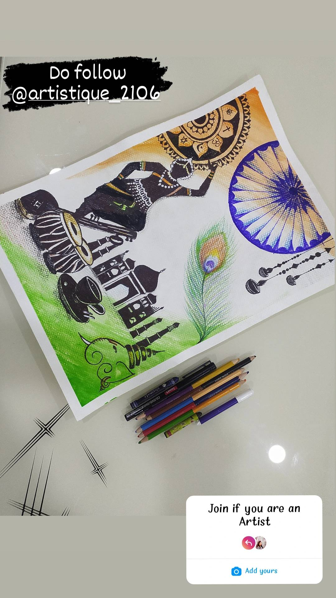
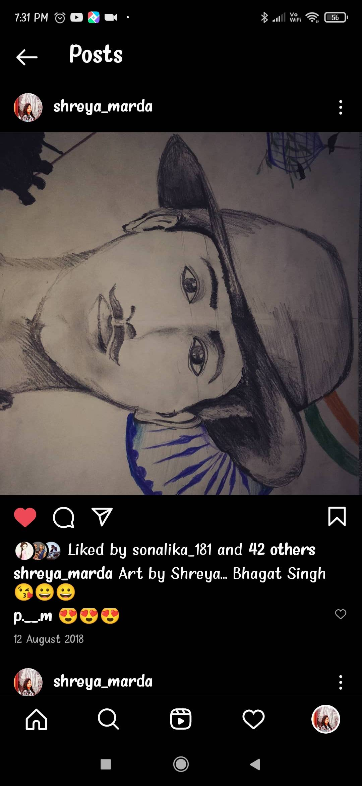

My name is Shreya Marda.
I am from Karnataka.
I am studying in Indian Institute of Technology, Goa.
My hobbies are dancing, painting and sketching.
| Year of Graduation | Degree | Institution |
|---|---|---|
| 2024 | BTech | Indian Institute of Technology Goa |
| 2021 | 12th standard or equivalent | Sri Chaitanya |
| 2019 | 10th standard or equivalent | Shantiniketan group of Institutions |
I have many hobbies and even I like spending time with those hobbies like dancing, painting and sketching.
I have also received many prizes in these hobbies.In painting competition in IIT Goa on the Republic day I got
2nd prize.
I also participated in CultRang in the dance compeitions like ABCD, Tribhanga, Artistry and Abstract.
I have given some of my drawings below
 